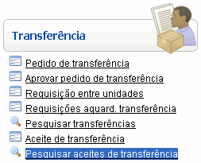
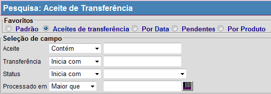

Pesquisar Aceites de Transferência [ Voltar ]
Utilize este formulário para localizar e abrir aceites
de transferência
O formulário "Pesquisar
aceites de transferência" encontra-se dentro do menu "Transferência".

Ao clicar no formulário, o sistema exibirá a seguinte
tela:

1º
Passo:
para localizar um aceite de transferência, configure as opções de
filtros. Um ou mais filtros poderão ser utilizados
concomitantemente. Os filtros disponíveis são:
- N°. do
aceite. Digite neste campo caracteres do código do aceite desejado para retornar somente registros
que contêm o conteúdo digitado.
- N°. da
transferência.
Digite aqui os caracteres iniciais da transferência desejada para
retornar somente transferências cujos códigos se iniciem com o conteúdo
digitado.
- Status.
Se desejar realizar a pesquisa para apenas um determinado status,
informe-o aqui Os status disponíveis são Não Processado, Processado, Sem Recebimento, Total do Recebimento e Estornado.
- Processado
em. Você
pode utilizar o filtro de data para selecionar aceites referentes a uma
determinada data ou período. Para isso, utilize o indicador
específico do filtro (Igual
a, Menor que, Maior que, etc (ver imagem abaixo). Exemplos: para localizar
transferências de uma determinada data, utilize a opção "Igual a" e informe
a data desejada; ou, para pesquisar transferências criadas após uma
data específica, selecione a opção "Maior
que" e informe a data de referência.

2º
Passo: selecione com um clique o aceite desejado. A tela "Aceite de Transferência" será aberta e os dados do aceite em questão serão exibidos.
Ir
para o topo da página
|